設定項目別リファレンス¶
注釈
本章にて実施している rootパスワードの設定 項及び WEB管理者パスワード変更 項パスワード設定はセキュリティ上重要です。その為、クラックされにくくなるようなパスワードを設定してください。
サービス制御・拡張・AirManage機能の表示/非表示¶
本WEB-UIはIoT関連向けにカスタマイズされていますが、別の目的に本装置を利用の際、サーバの基本設定部分のみ残しIoTサービス関連のWEB表示を無効にすることが出来ます。
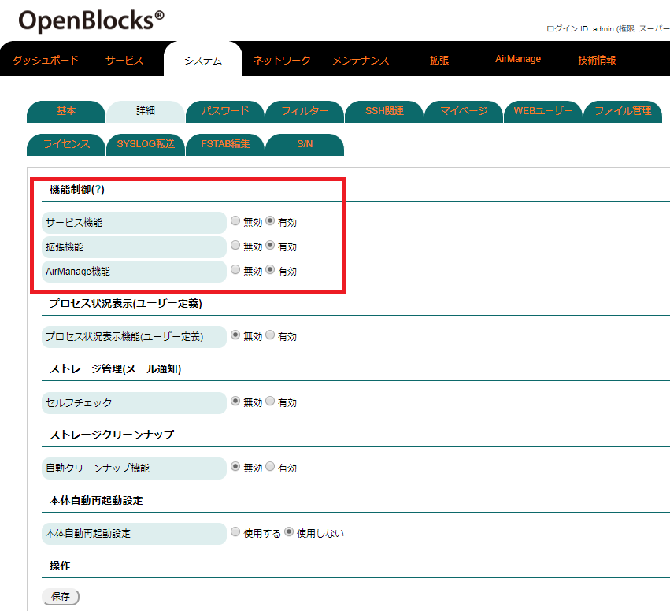
機能制御 |
|
|---|---|
項目 |
備考 |
サービス機能 |
サービスタブを非表示にします。 |
拡張機能 |
拡張タブを非表示にします。 |
AirManage機能 |
AirManageタブを非表示にします。 |
プロセス状況表示機能¶
ユーザーの追加したプロセスや基本的なプロセスの監視を行えます。
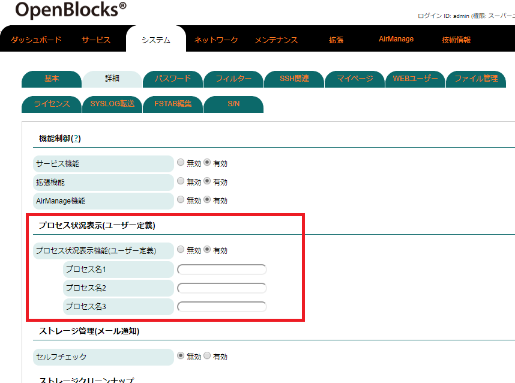
プロセス状況表示 |
|
|---|---|
項目 |
備考 |
プロセス状況表示機能(ユーザー定義) |
例えばdhcpd等の監視したいプロセスを登録しておくとダッシュボードにそのプロセスが起動して いるか表示されます。 最大3つまで登録できます。 |
ストレージアラート機能¶
定期的（1時間に1回）にストレージ容量をチェックし、閾値を超えた場合にメールで通知させる機能です。ログ等によるストレージ容量の圧迫を監視できます
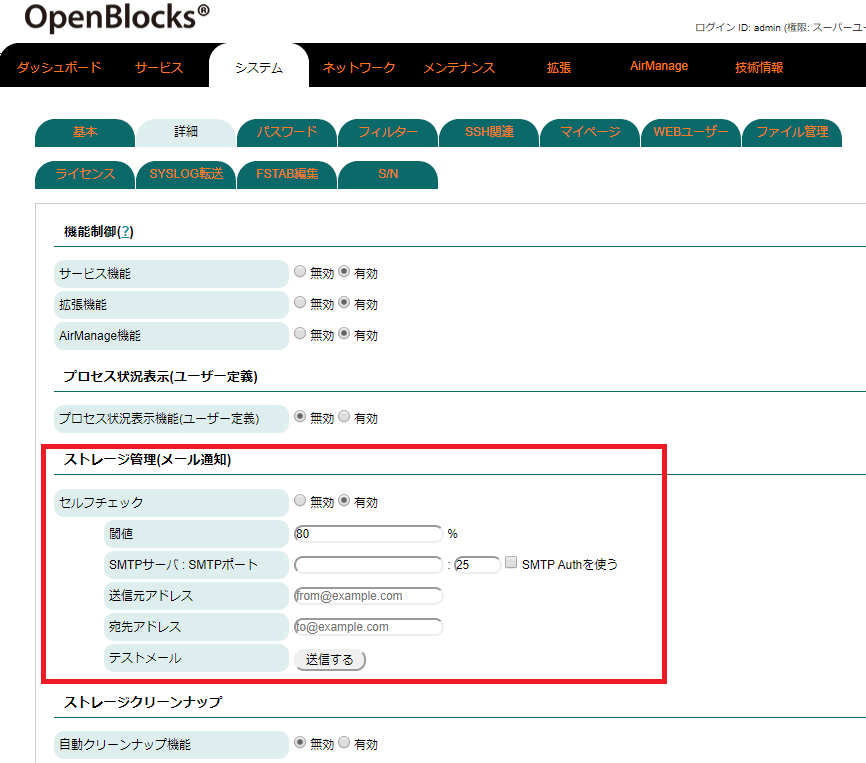
ストレージ管理(メール通知) |
|
|---|---|
項目 |
備考 |
セルフチェック |
本機能を使用する場合、「有効」を選択します。 |
閾値 (デフォルト80%) |
アラートを上げる際の閾値です。 |
SMTPサーバ：SMTPポート |
メールサーバのアドレスとポートを入力。SMTP Authに対応したサーバを使用する場合、チェックを 入れます。 |
SMTP Auth |
「SMTP Authを使う」にチェックを入れた場合に表示されます。SMTP Auth用のユーザ名、パスワー ドを設定します。 |
送信元アドレス |
メール送信の際のFromアドレスを入力します。 |
宛先アドレス |
メール送信の際のToアドレスを入力します。 |
テストメール |
設定した内容でテストメールを送信します。 メール本文の内容確認、設定に誤りがないかが確認できます。 |
rootパスワードの設定¶
本装置にSSHやシリアルコンソールでログインする際に利用可能なrootアカウントのパスワードを変更できます。
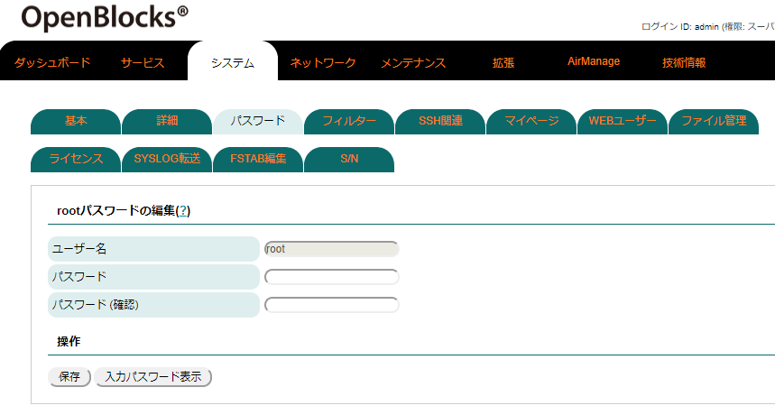
変更したいパスワードを確認欄と併せ2回入力し、「保存」ボタンを押します。
本システムを利用する際には、セキュリティ確保のために必ずデフォルトパスワードを変更してください。
注釈
本装置のデフォルトのrootアカウントのパスワードは 0BSI0T です。
(2つある０は数字です。)
フィルター許可¶
本装置の各フィルターを一時的、または再起動後等の恒久的に有効にできます。
デフォルト |
拡張機能をインストールした場合 |
|---|---|
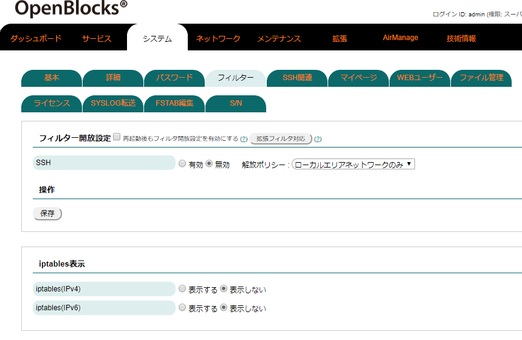 |
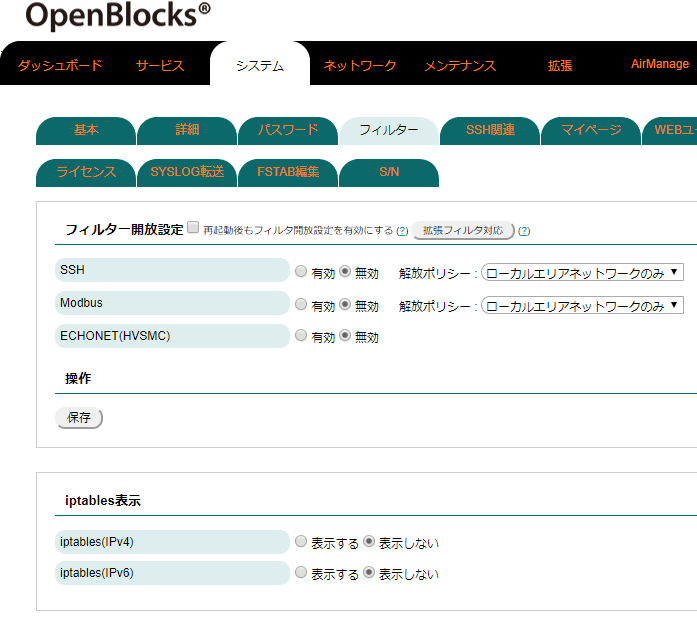 |
項目 |
備考 |
|---|---|
フィルター開放設定 |
再起動後等も各フィルター開放を有効にする場合には、チェックを入れて保存ボタンを押します。 |
拡張フィルタ対応 |
ユーザーが独自に追加したアプリケーション等においてポート開放等が必要な場合、iptables及び ip6tablesコマンドにてポート開放を行う必要があります。ポート開放設定を行うシェルスクリプト ファイルの雛形を作成します。 |
SSH |
SSHを使って本装置にログインする時にラジオスイッチの有効を選択し保存ボタンを押します。 |
WEB UI(モバイル回線) |
モバイル回線経由でのWEB UIアクセスをする際に、ラジオスイッチの有効を選択し保存ボタンを押 します。 |
【各種機能により追加される項目】 |
追加機能により項目が表示されます。SSH等と同様にラジオボタンにて選択し保存ボタンを押して ください。 |
解放ポリシーは、"ローカルネットワークのみ"または"全て"から選択してください。モバイル回線モデムを搭載しているモデルの場合は、“モバイル回線のみ”が選択可能となります。
また、一部のサービスについては解放ポリシーが存在しない物があります。
※モバイル回線モデムが搭載されている場合に表示されます。通常ではWEB UIへのアクセスはWLANまたはEthernet経由でのアクセスのみサポートしています。モバイル回線経由のアクセスはセキュリティ上、通常サポートしていません。
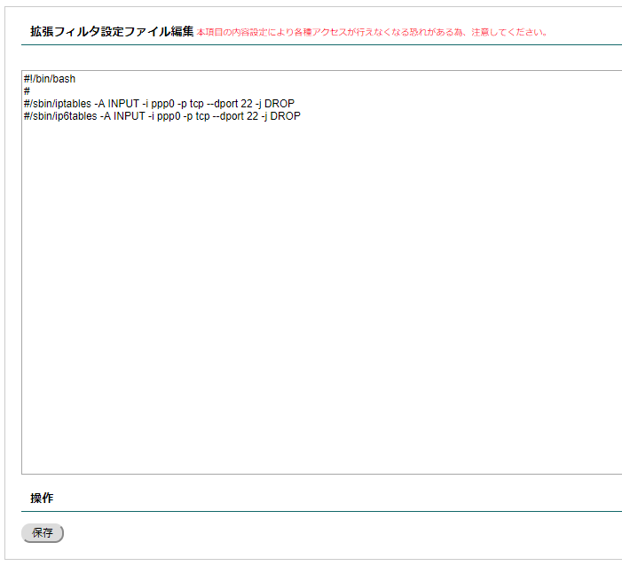
項目 |
備考 |
|---|---|
拡張フィルタ設定ファイル編集 |
拡張フィルタに対応させた場合、上図のようポート開放設定を行うシェルスクリプトファイルの 入力フォームが表示されます。 対象ポートへのアクセスを許容するiptables及びip6tablesコマンドを入力後、保存ボタンを押す ことで反映されます。 ※本機能ではiptables及びip6tablesコマンドの理解が必用となりますので、ご注意ください。 |
iptables表示 |
|
|---|---|
項目 |
備考 |
iptables(IPv4) |
ラジオボタンを表示するに設定するとiptablesのIPv4の内容を表示します。 |
iptables(IPv6) |
ラジオボタンを表示するに設定するとiptablesのIPv6の内容を表示します。 |
注釈
各フィルター開放が不要になった場合、無効化を忘れないでください！！
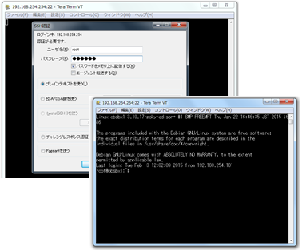
SSHは上図の通り、TeraTermなどのターミナルソフトでIPアドレスを指定してログインします。 また、SSHをよりセキュアに運用するためには「 SSHの鍵交換 」で解説される公開鍵の登録を行うことをお奨めします。
SSHの鍵交換¶
SSHをよりセキュアに使う為の設定画面です。
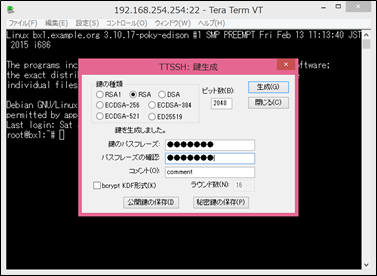
先ず、上画面のようにTeraTermなどで公開鍵・秘密鍵を生成します。
TeraTermの場合、指定ディレクトリにこの2つの鍵が保存されるので、そのうち公開鍵をテキストエディタなどで表示し、コピーバッファに保存してください。
設定箇所はシステム⇒SSH関連タブとなります。
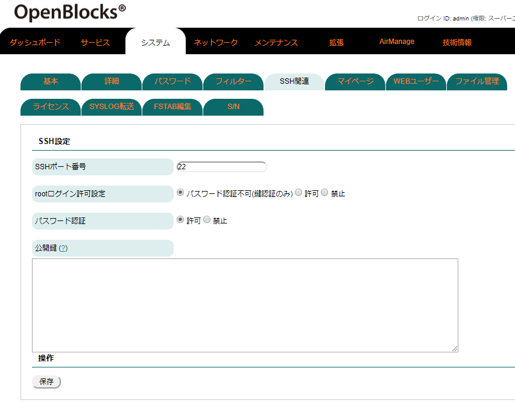
SSH設定 |
|
|---|---|
項目 |
備考 |
SSHポート番号 |
SSHに使用するポート番号を設定します。 |
rootログイン許可設定 |
本装置にrootアカウントでのSSHログインを許可する場合に「パスワード認証不可」を選択します。 |
パスワード認証 |
SSHに鍵を使わずアクセスする場合は、パスワード認証を「許可」します。 鍵を使った認証にする場合には、「禁止」を設定します。 |
公開鍵 |
前述のTeraTermなどで作った公開鍵を貼り付けてください。 なお、鍵を使わない時には空欄にしておきます。 |
設定が完了したら「保存」ボタンを押します。
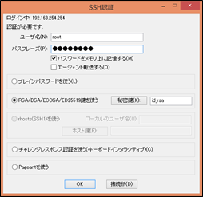
以上の設定後、SSHでの鍵付きのログインを行ってください。
上画面はTeraTermでの接続例です。
WEB管理者パスワード変更¶
WEB UIの管理者パスワードが変更できます。尚、ユーザ名の変更はできません。
設定箇所はシステム⇒マイページタブとなります。
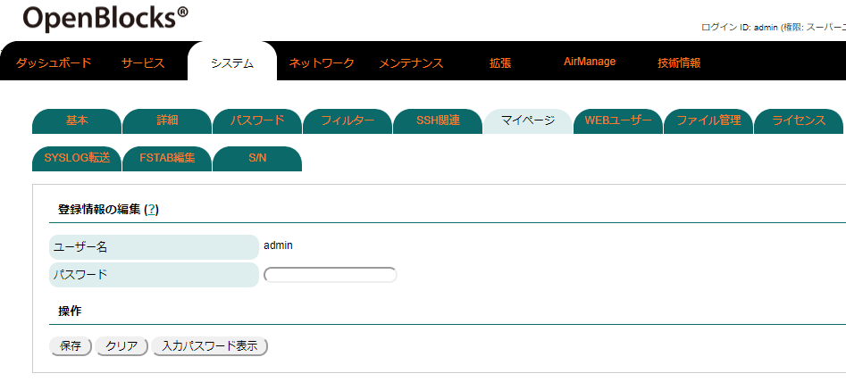
編集後、保存ボタンを押した時点で変更が有効になります。
変更後はログインし直してください。
WEBユーザー¶
WEB UIのログインユーザーの追加や、別のログインユーザーのパスワード変更(スーパーユーザーのみ)が行えます。
設定箇所はシステム⇒WEBユーザータブとなります。
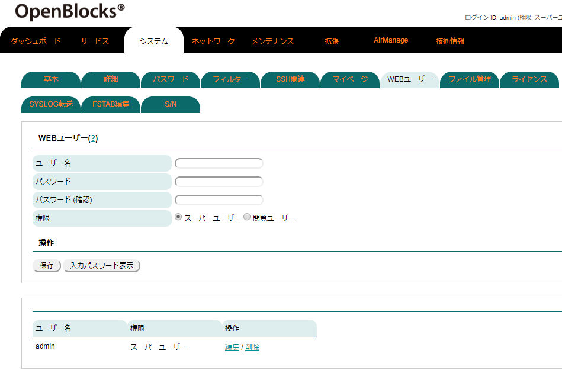
ユーザー名、パスワード等を設定後、保存ボタンを押した時点で変更が有効になります。
ファイル管理¶
WEB UIを用いてOpenBlocks内の特定ディレクトリにファイルのアップロード等が行えます。
設定箇所はシステム⇒ファイル管理タブとなります。
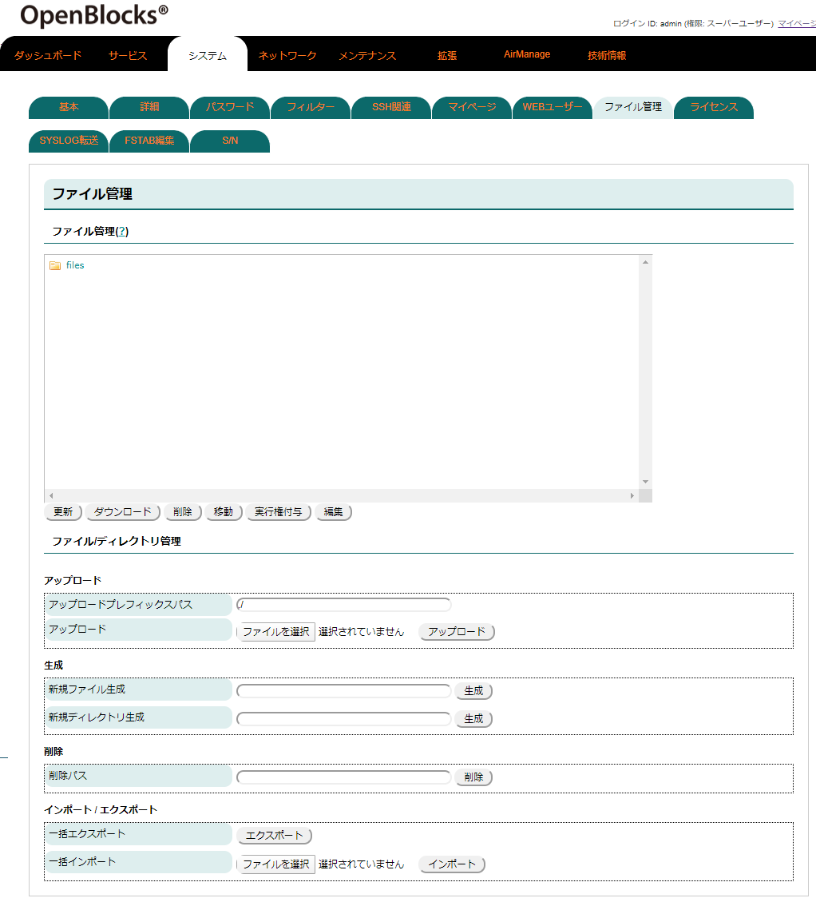
ダウンロード、削除、移動、実行権付与または編集をする場合には、ファイルを選択し、ボタンを実行内容のボタンを押してください。
また、アップロードする場合には、「ファイルを選択」からアップロードするファイルを選択後に「アップロード」ボタンを押してください。
尚、アップロード先は以下となります。
Dir : /var/webui/upload_dir/
容量が256MBを超えるファイルはアップロードが行えません。そのようなファイルをアップロードする場合にはSSHを有効にし、SFTPにてファイルをアップロードしてください。
新規ファイル及び新規ディレクトリ生成は、ファイルまたはディレクトリパスを入力し作成します。また、/var/webui/upload_dir/下にファイル作成が可能です。(上位のディレクトリ下には作成できません。)
一括エクスポートは/var/webui/upload_dir/下の各ファイル一式をtar+gz形式に圧縮したファイルがエクスポートされます。
一括インポートは/var/webui/upload_dir/下にtar+gz形式のデータを展開します。
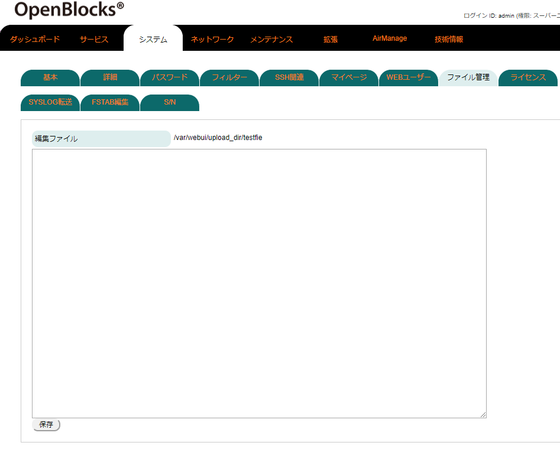
ファイル選択後、編集ボタンを押した場合には左図のように画面が表示されます。
編集内容を保存する場合には、編集ボタンを押してください。
尚、編集はテキストファイルのみサポートします。
ソフトウェアライセンスの表示¶
WEB UIにて使用されているソフトウェアライセンス、使用許諾を表示できます。
表示箇所はシステム⇒ライセンスタブとなります。
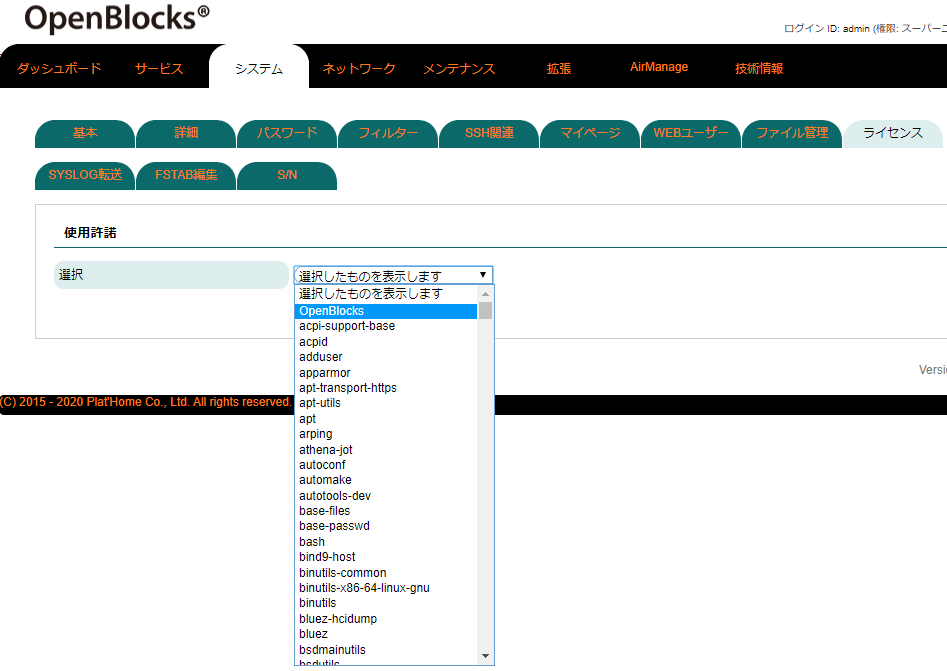
本装置に使用されているソフトウェアライセンス、使用許諾をソフトウェア毎にプルダウンメニューから選んで表示できます。
ダイナミックDNS¶
WEB UIにてダイナミックDNSサーバに対して、現状のIPアドレスを定期的に登録します。
設定箇所はネットワーク⇒ダイナミックDNSタブとなります。
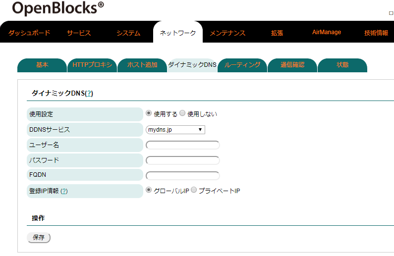
ダイナミックDNS |
|
|---|---|
項目 |
備考 |
使用設定 |
ダイナミックDNSを使う時に「使用する」を選択します。 |
DDNSサービス |
DDNSサービスを選択します。 |
ユーザー名 |
DDNSのユーザアカウントを入力します。 |
パスワード |
DDNSのパスワードを入力します。 |
FQDN |
DDNS上に登録されたFQDNを入力します。 |
登録IP情報 |
DDNS上に通知するIPアドレスの属性を設定します。 |
設定が完了したら「保存」ボタンを押します。設定内容を反映させるには装置の再起動が必要です。
静的ルーティングの追加¶
APモード時などのルータ動作時に静的ルーティングの設定が必要な時ここで設定します。
設定箇所はネットワーク⇒ルーティングタブとなります。
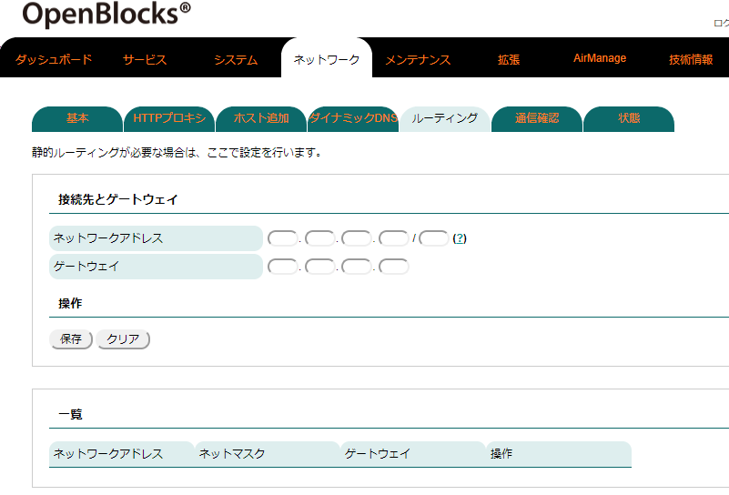
ネットワークアドレスとネットマスクを指定し、ゲートウェイとなる装置のIPアドレスを指定し保存ボタンを押します。
静的ルーティングは複数登録が出来ます。
設定内容を反映させるには装置の再起動が必要です。
通信確認¶
ネットワークが使えているかpingコマンドなどでテストできます。
テスト箇所はネットワーク⇒疎通確認タブとなります。
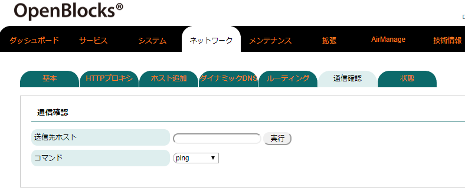
使用するコマンドはプルダウンメニューで ping / traceroute / nslookup から選択できます。
コマンドを選択し実行ボタンを押すと下部に実行結果が即表示されます。
ネットワーク状態確認¶
ネットワークの様々な状態を確認できます。
確認箇所はネットワーク⇒状態タブとなります。
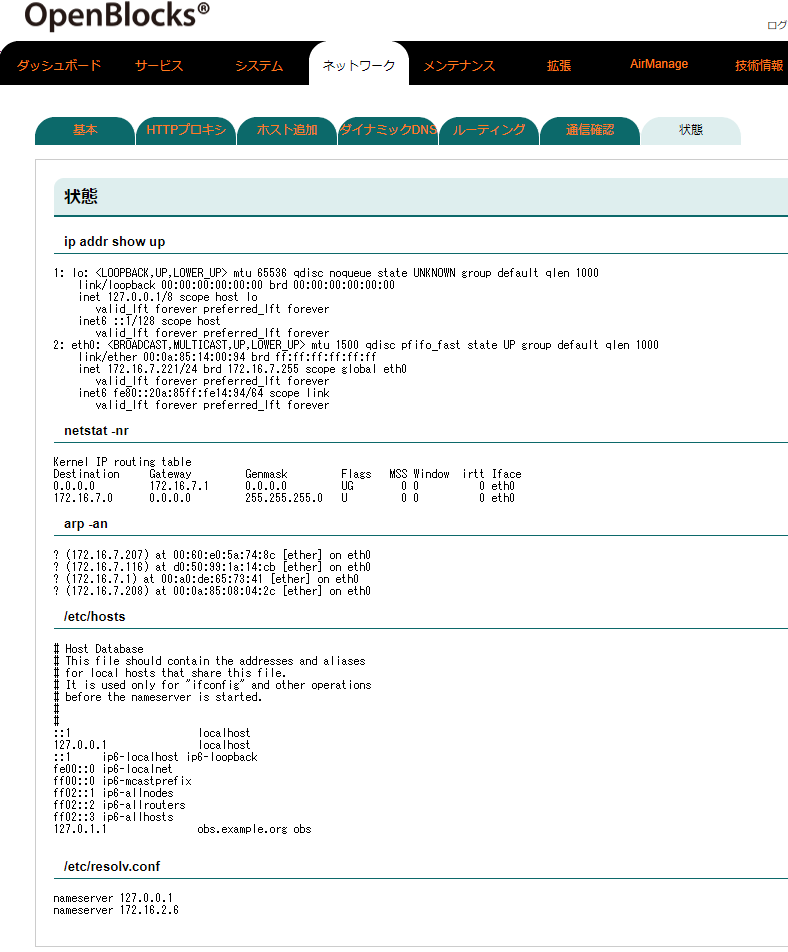
本装置の設定を一通り終わり、再起動した後にこの画面で確認する事をお奨めします。
また、以下の項目を確認できます。
・IPアドレス
・無線I/F情報(無線I/F対応モデルのみ)
・ルーティング情報
・arp情報
・ホスト情報
・DNSサーバ情報
・モデム情報(モデム搭載モデルのみ)
・SIM情報(モデム搭載モデルのみ)
コンフィグレーションのバックアップとリストア¶
WEB UIにて設定したコンフィグレーションをWEBクライアントに対してバックアップを行えます。また、そのファイルを用いてリストアが実施できます。
実行箇所はメンテナンス⇒設定タブとなります。
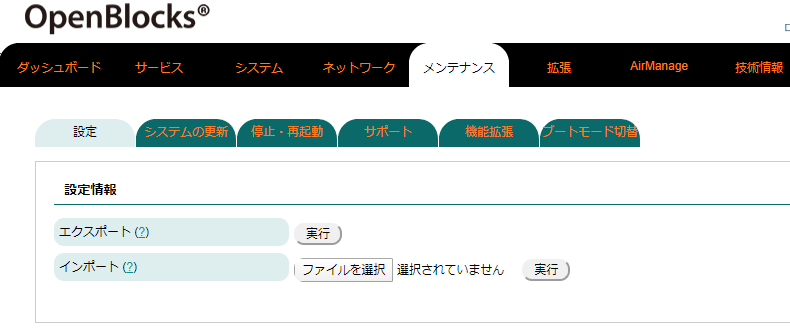
エクスポートの実行ボタンを押すと、コンフィグレーションファイルのバックアップをWEBクライアントにダウンロードします。
設定をリストアする時には、インポートのファイル選択で、バックアップファイルを選び、実行ボタンを押すとコンフィグレーションファイルをもとにリストアされます。
※本装置のシステムセットアップが完了した際、設定を変更した際は都度バックアップの実行を推奨します。
※コンフィグレーションファイルの編集は原則サポートいたしません。
※コンフィグレーションファイルのインポートにおいて、以下の置換ルールが適用されます。
置換元文字列 |
置換内容 |
備考 |
|---|---|---|
@@SERIAL@@ |
本体シリアル番号 |
システムソフトウェアのアップデート¶
本装置のファームウェアやOS、アプリケーションのバージョンアップを確認し、アップデートできます。
実行箇所はメンテナンス⇒システム更新タブとなります。
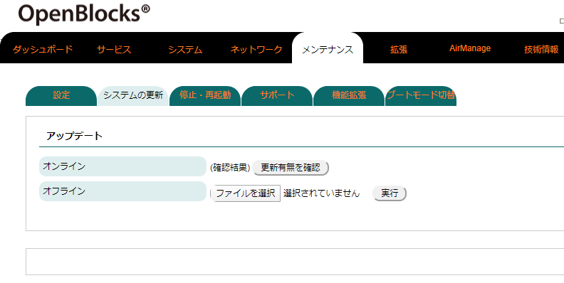
本装置がインターネット接続環境にある場合はオンラインアップデートが可能です。
オンラインにある「更新有無を確認」を押すとリポジトリ情報に基づいてアップデート内容を確認し、更新があれば本画面の下部にそれぞれのアップデート内容が表示されるので、更新する場合はアップデートを実行してください。
尚、オフラインパッケージはインパクトあるアップデート時に弊社から提供するパッケージです。
WEBクライアント(ファイルサイズ上、PCを推奨)にダウンロードして、オフラインにある「ファイルを選択」ボタンでPC上にあるアップデートパッケージを選んで実行ボタンを押します。
セキュリティのアップデートは頻繁にあるので、なるべくマメにアップデートを行うことを推奨します。
また、適用パッケージによっては再起動後にアップデートが反映されるものが多数ありますので、アップデート後は本体再起動の実施を強く推奨いたします。
SMS送信¶
本装置は一部のモバイル回線モデムモジュールにてSMSをサポートしています。
(モバイル回線契約にSMS機能が無い場合、サポートできません。また、本装置にSIMが挿入されている必要があります。)
これにより、SMSをWEB UI上から送信することが可能となっております。
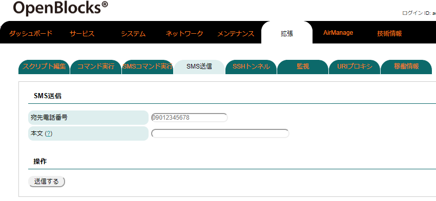
SMS送信 |
|
|---|---|
項目 |
備考 |
宛先電話番号 |
SMS送信先の電話番号を入力します。 |
本文 |
送信するSMSの本文を入力します。 尚、本文には最大70文字まで入力可能です。 |
電話番号及び本文を入力し、「送信する」ボタンを押すことによりSMSが送信されます。
SSHトンネル¶
SSHサーバに対してSSH接続を行い、トンネルを構築します。これにより、SSHサーバからトンネル経由にてOpenBlocks側へSSHアクセスを行うことが可能となります。
※本機能を使用する場合には、「 フィルター許可 」にてSSHのフィルターを許可しておく必要があります。
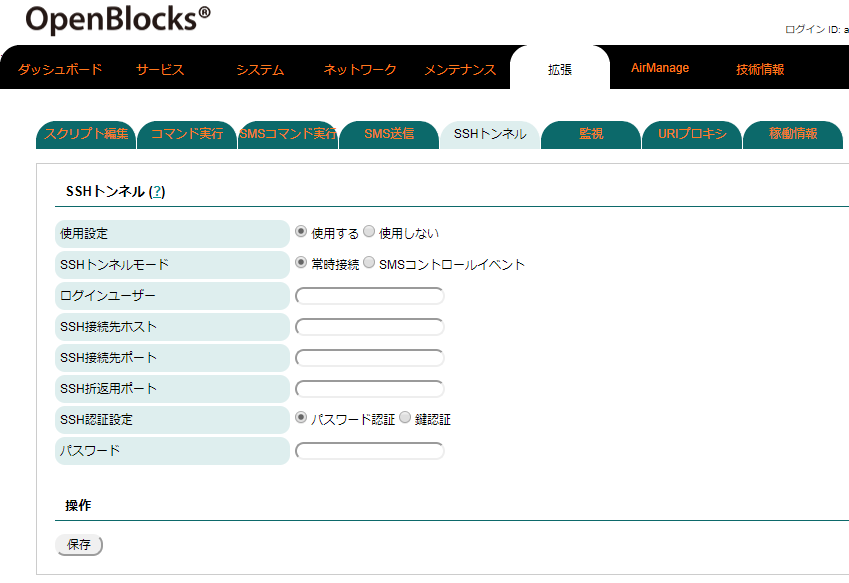
SSHトンネル |
|
|---|---|
項目 |
備考 |
使用設定 |
本機能を使用するか設定します。使用する場合には「使用する」を選択してください。 |
SSHトンネルモード |
SSHトンネルを構築するモードを設定します。 "常時接続"にした場合、稼働中は常にSSHトンネルの構築を試みます。 "SMSコントロールイベント"に設定した場合、SMSまたはSMSコントロールダイレクト実行により SSHトンネルが構築されます。 ※SMSの場合、最長30分間SSHトンネルが構築されます。 |
ログインユーザー |
SSHサーバにてログインするユーザーを指定します。 |
SSH接続先ホスト |
接続先のSSHサーバのIPアドレスやFQDNを設定します。 |
SSH接続先ポート |
接続先のSSHサーバのポート番号を設定します。通常は22番となります。 |
SSH折返用ポート |
SSHサーバにて接続元の本機器へアクセスする為のポート番号を設定します。 |
SSH認証設定 |
SSHサーバへ接続する際の認証方式を設定します。 |
パスワード |
認証方式がパスワード認証の場合のパスワードを入力します。 |
パスフレーズ |
認証方式が鍵認証の場合、パスフレーズを入力します。 |
プライベートキーファイル |
認証方式が鍵認証の場合、プライベートキーファイルパスを入力します。 |
※鍵認証におけるプライベートキーファイルはファイル管理からアップロードしてください。
設定完了後、保存ボタンを押してください。また、再起動することにより本機能は有効となります。
サポート情報¶
サービスに関するサポート窓口情報に関して、メンテナンス⇒サポートタブにて確認が行えます。

※上図はサンプル画像となります。
連絡先等の変更の恐れがあります。最新の情報はWEB UIにて確認を行ってください。
ログ・環境情報取得のダウンロードの実行ボタンにてサポートに必要なログ情報等が取得できます。
ログ情報等の取得はWEB UI等で標準的に弊社でのサポート時に必要な情報のみが含まれております。
この部分に独自アプリケーションのログ等を含めたい場合、「システム」→「ファイル管理」にて"add_support.list"というファイルをアップロードし、ファイル内に追加したいデータパスを記載することですることでサポート用データに追加の情報の拡張が行えます。
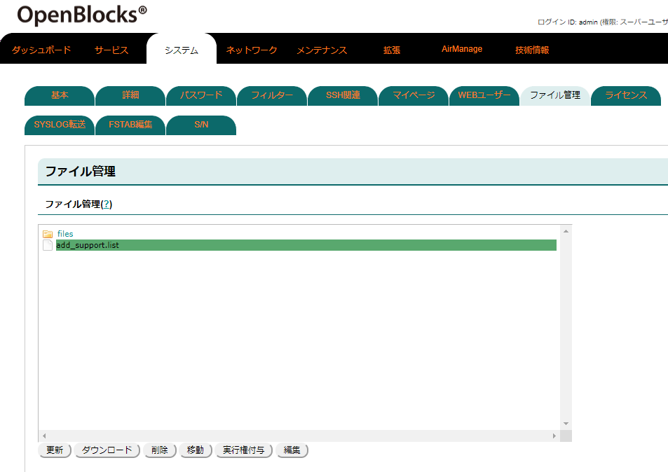
※add_support.listサンプル |
|---|
/var/log/apt /usr/src/ |
尚、ルートディレクトリ(/)及び１階層目(/tmpや/var等)の指定は無視されます。
OpenBlocksのサービス及び技術情報一覧¶
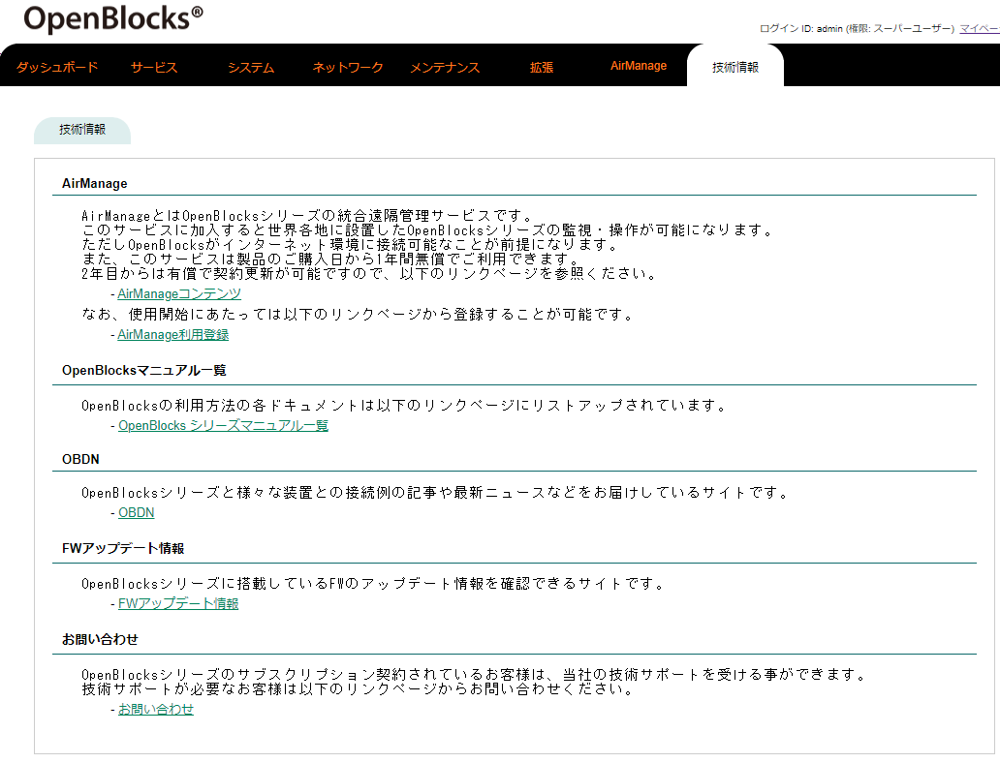
「技術情報」タブをクリックすると当社HPへの各リンクが表示されます。(アクセスする場合にはインターネット接続が必用となります。)
各リンクはAirManageサービスへの加入ページや、製品マニュアル及びOpenBlocksを用いた技術情報サイト、FWアップデート情報、購入後製品に関するお問い合わせへとなります。
FUNCスイッチの機能割当¶
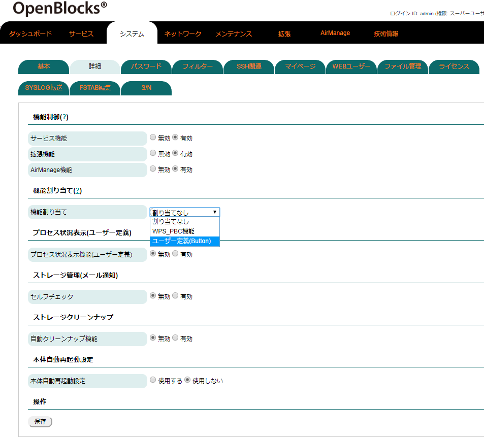
「システム」の「詳細」タブにてFUNCスイッチに対して機能が割り当てできます。以下の機能を設定可能です。
・割り当てなし
・WPS_PBC機能
・ユーザー定義(Button)
WPS_PBC機能はWLANインターフェースが存在している場合のみ、使用可能です。
WLAN0インターフェースを使用状態にした場合、WPS_PBC機能が有効となります。
※APモードの場合には、WPS_PBCの設定を行う必要があります。
※クライアントモードの場合において、WPS_PBC機能にてAPとのネゴシエーション完了後、設定反映の為自動で再起動が行われます。尚、モデム使用時や他のI/FがDHCP設定の場合には使用不可となります。
また、ユーザー定義(Button)は拡張機能のスクリプト編集にて、対象のスクリプトを作成している場合に機能が有効となります。
監視機能¶
OpenBlocks内のログファイルや稼働プロセスの監視を行えます。
ログファイル監視は特定キーワードが出力された場合にアテンション喚起状態となります。
また、プロセス監視は設定したプロセスが稼働していない場合にアテンション喚起状態となります。尚、対象プロセスの未稼働状態でアテンション喚起状態となったプロセスは監視対象外となります。
アテンション喚起状態のリセットはダッシュボードから実施可能です。
また、本機能はAirManage機能と連動しており、AirManage機能を有効にしている場合にはAirManageリモート管理サーバ側にてアテンション情報の確認することが出来ます。
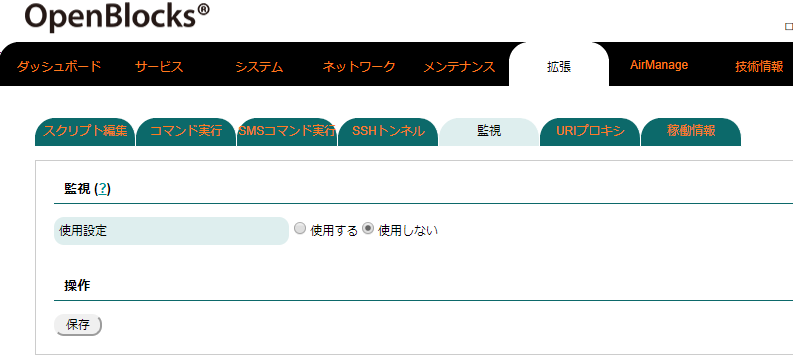
監視機能を有効にする場合、使用設定を「使用する」を選択します。
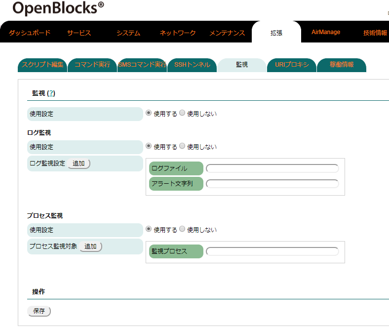
ログ監視機能を有効にする場合には、ログ監視部の使用設定を「使用する」を選択します。
また、プロセス監視を有効にする場合には、プロセス監視部の使用設定を「使用する」を選択します。
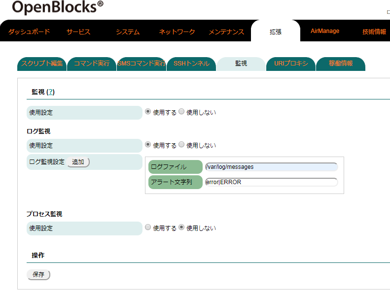
ログ監視 |
|
|---|---|
項目 |
備考 |
使用設定 |
ログ監視機能を有効にする場合には、ログ監視部の使用設定を「使用する」を選択します。 使用しない場合は「使用しない」を選択します。 |
ログ監視設定 |
追加ボタンにて監視設定の項目を追加することが出来ます。(最大8個までとなります) |
ログファイルパス |
監視対象とするログのファイルパスを設定します。 (ex. /var/log/messages) |
アラート対象文字列 |
アラート(アテンション)として扱う文字列を設定します。 複数の条件を設定する場合、"|"にて区切ることで設定可能となります。 (ex. error|ERROR) |
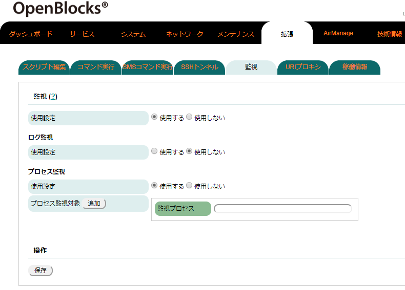
プロセス監視 |
|
|---|---|
項目 |
備考 |
使用設定 |
プロセス監視機能を有効にする場合には、プロセス監視部の使用設定を「使用する」を選択しま す。使用しない場合は「使用しない」を選択します。 |
プロセス監視設定 |
追加ボタンにて監視設定の項目を追加することが出来ます。(最大8個までとなります) |
監視プロセス |
監視対象とするプロセスを設定します。 正確にチェックする場合には、パスを含んだ状態で設定することを推奨します。 |
設定完了後、「保存」ボタンを押すことで監視設定が完了となります。
「保存」ボタンを押した場合には既にアテンション喚起状態となっていた場合には、解除されます。
また、アテンション状態はダッシュボードで確認が行えます。
●アテンション未発生の場合
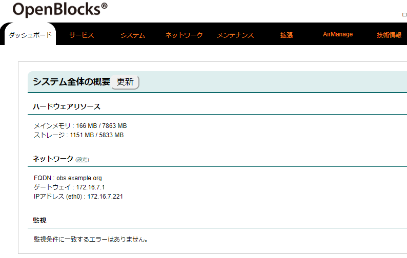
●アテンション喚起状態の場合
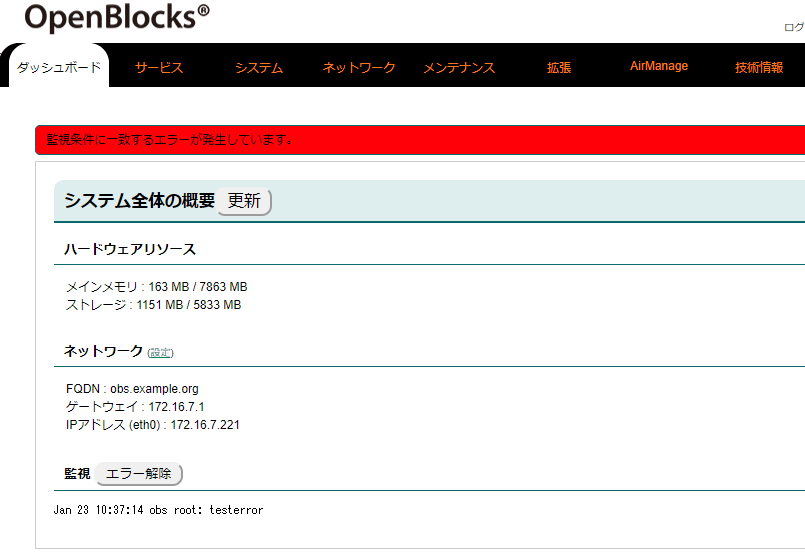
エラー解除ボタンを押すことにより、アテンション喚起状態を解除できます。
また、アテンション喚起のログが一定行以上となった場合、全件表示ボタンが表示されます。そのボタンを押すことにより、設定している監視状態のログが確認できます。
URIプロキシ機能¶
OpenBlocks内のWEBプロセスエンジン機能により、WEB UI経由にて自ホストまたは他ホストのWEBへアクセス可能です。
本機能を設定することにより、WEB UIのポートのみで自ホストや別ホストのWEBプロセスへアクセスできますので、セキュリティ観点上本機能の使用を推奨します。
また本体内で稼働している及び稼働可能なWEBプロセス等については 注意事項及び補足 の 使用ポート一覧 を参照して下さい。
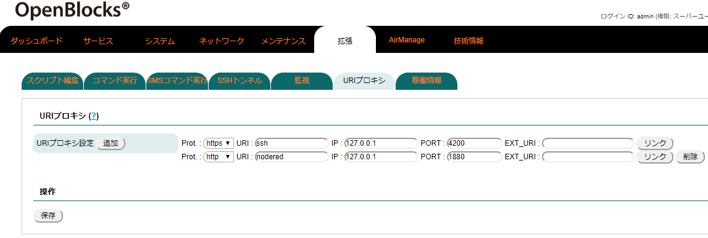
「拡張」の「URIプロキシ」タブにてWEB UI経由にてアクセスしたいWEBサービスを設定します。
項目 |
備考 |
|---|---|
Prot. |
アクセス先のWEBページのプロトコルを"http"または"https"から選択します。 |
URI |
ユニークなURIを設定してください。 ※英数字のみサポートしております。 Ex.) Node-REDの例 : nodered |
IP |
アクセスしたいWEBサービスが稼働している自ホストまたは他ホストをIPv4形式のIPアドレスで指定 してください。 |
Port |
アクセスしたいWEBサービスが稼働しているPORT番号を設定してください。 Ex.) Node-REDのデフォルト例 : 1880 |
EXT_URI |
アクセスしたいWEBへの追加URIを設定することが可能です。特定のURIにアクセスした場合には設定 してください。 Ex.) Node-REDの/worldmap設定例 : worldmap |
また、本機能で参照するWEBサービスのプロトコルが異なる場合、アクセス可否が異なります。以下の表をご確認ください。
WEB UIアクセスプロトコル |
参照WEBサービスプロトコル |
アクセス可否 |
|---|---|---|
HTTP |
HTTP |
可能 |
HTTP |
HTTPS |
不可能 |
HTTPS |
HTTP |
可能 |
HTTPS |
HTTPS |
可能 |
WEBコンソール機能¶
OpenBlocks IoT Family内にshell in a boxが起動しています。このプロセスはWEBブラウザ経由でコンソール機能が使用可能となります。本機能では4200番ポートを使用しております。セキュリティの関係上、本ポートをデフォルトで開放する機能は用意しておりません。そのため、URIプロキシ機能を用いてアクセスを行ってください。
※HTTPS経由でのアクセスのみ対応しています。
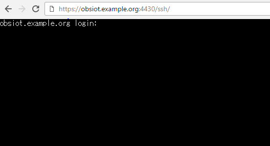
上図は対象の画面となります。
本機能向けにsudo機能をすべて有効にしているアカウントを用意しております。尚、rootアカウントでのログインは行えません。
アカウント : obsroot
パスワード : 0BSI0T ※0は数字の0です。
※パスワードはクラックされる恐れがありますので、passwdコマンドにて変更してください。
SYSLOG転送機能¶
本製品内にて出力される全てのSYSLOGを外部のSYSLOGサーバへ転送が行えます。
「システム」→「SYSLOG転送」タブから設定が行えます。
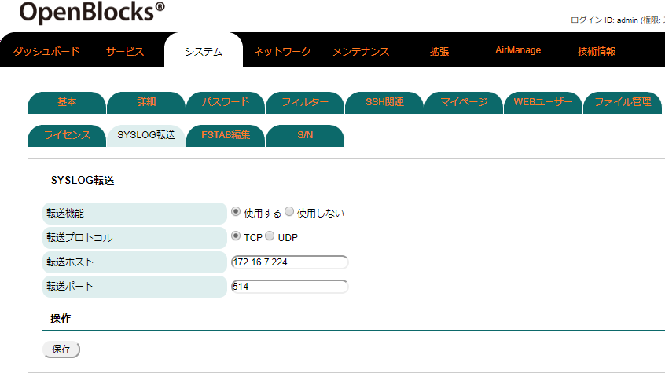
SYSLOG転送 |
|
|---|---|
項目 |
備考 |
転送機能 |
SYSLOG転送の機能設定を行います。 転送を行う場合には、「使用する」を選択してください。 |
転送プロトコル |
SYSLOG転送を行う際のプロトコルを「TCP」または「UDP」から選択します。 |
転送ホスト |
SYSLOG転送先のホストをIPアドレスまたはFQDN形式で設定します。 |
転送ポート |
SYSLOG転送先のポート番号を設定します。通常は514から変更する必要はありません。 |
設定完了後に「保存」ボタンを押すことで、反映されます。
ストレージクリーンナップ機能¶
本機能はストレージが閾値を超えた場合において、特定ディレクトリ配下の優先保存期間を超えている過去ファイルを削除します。
本項は「システム」→「詳細」タブから設定してください。
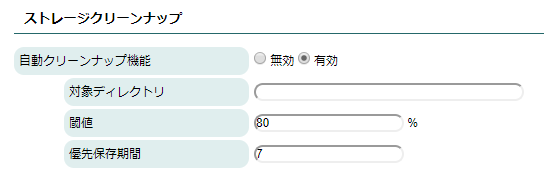
ストレージクリーンナップ |
|
|---|---|
項目 |
備考 |
自動クリーンナップ機能 |
本機能を使用する場合は「有効」を選択してください。使用しない場合は「無効」を選択してくだ さい。 |
対象ディレクトリ |
クリーンナップ対象とするファイルを格納するディレクトリを設定してください。 重要なファイル(コマンドやライブラリ)が存在するディレクトリは指定しないでください。 |
閾値 |
本機能を適用する際の閾値とするストレージの使用率を指定します。 |
優先保存期間 |
何日以内のファイルを残すかを指定します。 ここで指定した日数以内のファイル、削除されません。 |
電源監視機能¶
OpenBlocks IoT VX2及びEX1では内蔵バッテリーモジュールを用いることが可能です。このモジュールを用いている場合、停電等によってAC等の電源供給が一時的にダウンした状態での動作が可能となります。電源供給がダウンした状態で一定時間経過後、シャットダウン処理(電源喪失後実行コマンド)が行われます。
本項は「システム」→「詳細」タブから設定してください。
※本機能の表示は内蔵バッテリー対応しているモデルのみ表示されます。そのため、バッテリー搭載の有無とは連動しておりません。
※本機能は電源供給を確認し、内蔵バッテリー稼働後に安定したシステムのシャットダウンを行う機能です。内蔵バッテリーモジュールを搭載している場合、本機能を使用せずとも一時的な動作は可能となりますが、安定したシステムシャットダウンは行われません。
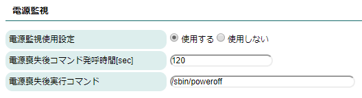
電源監視 |
|
|---|---|
項目 |
備考 |
電源監視使用設定 |
本機能を使用するかを設定します。 |
電源喪失後コマンド発呼時間[sec] |
内蔵バッテリー稼働運用状態に切り替わった後の電源喪失後実行コマンドを実行する時間を設定し ます。 |
電源喪失後実行コマンド |
安定したシステムのシャットダウンを行うコマンド(/sbin/poweroff)を設定してください。 また、システムのシャットダウンのみではなく他の処理も同時に行う場合には、スクリプトを作成 し指定してください。 |
本体自動再起動機能¶
連続稼働により自作アプリ等がメモリーリークを起こし、OS全体が不安定となることがあります。この場合、定期的に本体の再起動を定期的に行うことによって安定稼働を行うことができます。
本項は「システム」→「詳細」タブから設定してください。
毎日指定 |
曜日指定 |
日にち指定 |
|---|---|---|
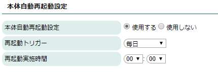 |
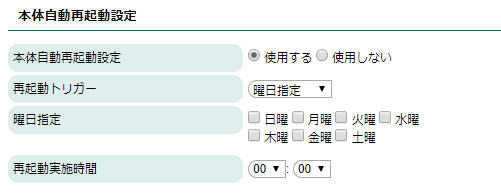 |
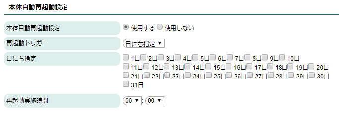 |
本体自動再起動設定 |
|
|---|---|
項目 |
備考 |
本体自動再起動設定 |
OpenBlocks本体を定期的に再起動を行うかを指定します。本機能を使用する場合には「使用する」 を設定してください。 |
再起動トリガー |
"毎日", "曜日指定", "日にち指定"から選択可能です。 |
曜日指定(曜日指定時に表示) |
再起動を実施する曜日を選択します。 |
日にち指定(日にち指定時に表示) |
再起動を実施する日にちを選択します。 |
再起動実施時間 |
本体の再起動を行う時間を指定します。 |
Pubキー追加機能¶
アップデート等により参照する標準以外のリポジトリを使用するケースがあります。この場合、OpenBlocks本体に対象のリポジトリのパブリックキーを追加する必要があります。また、意図せずパブリックキーを削除した場合にも本機能を用いて追加を行ってください。
本項は「メンテナンス」→「Pubキー追加」タブから設定してください。
※追加可能なPublicキーが存在しない場合、対象タブは表示されません。
※Publicキーのみではなく、参照するリポジトリを追加する必要があります。この場合、AirManage等によってsource.listの変更を推奨いたします。
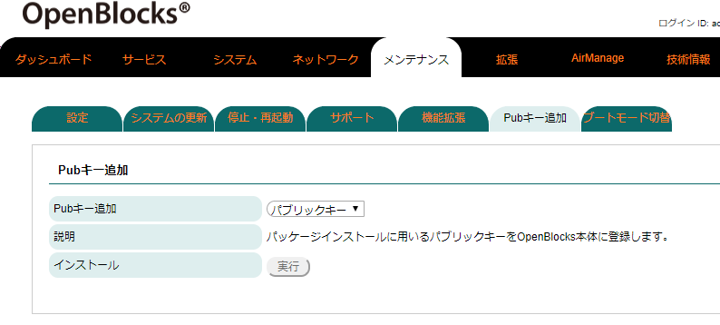
Pubキー追加 |
|
|---|---|
項目 |
備考 |
Pubキー追加 |
追加するパブリックキーを選択してください。 |
説明 |
対象のパブリックキーの説明が表示されます。 |
インストール |
選択されているパブリックキーのインストール作業を実施します。 本機能ではインターネット通信を行うため、事前にネットワークの設定をインターネット通信を行 えるようにしてください。 |
HTTPプロキシ(クライアント)機能¶
本機能はHTTPプロキシでのみインターネットに出るネットワークでのOpenBlocksを運用する際に用いる機能となります。
本項は「ネットワーク」→「HTTPプロキシ」タブから設定してください。
※本機能はモバイル回線等に切り替わった場合でも設定は有効となります。この場合、設定に合わないネットワーク環境となる為、通信が行えなくなります。そのため、モバイル回線との併用はしないでください。
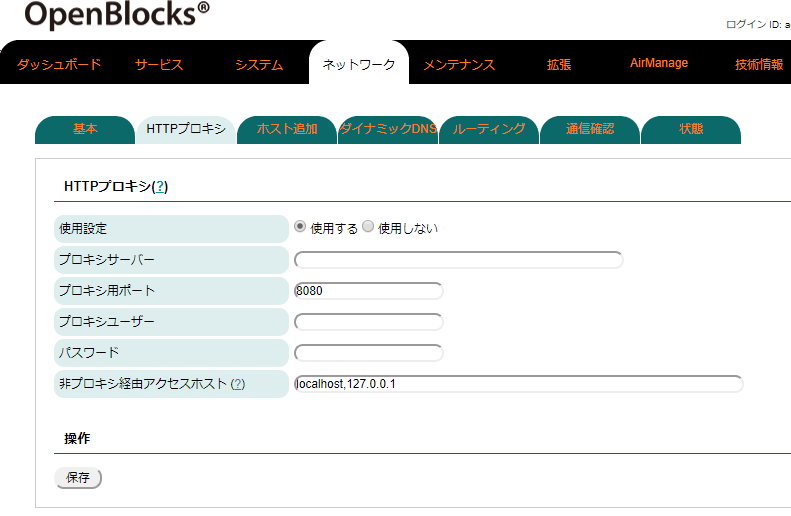
HTTPプロキシ |
|
|---|---|
項目 |
備考 |
使用設定 |
HTTPプロキシ経由で通信を行うかを設定します。HTTPプロキシ経由で通信を行う場合に「使用す る」を設定してください。 |
プロキシサーバー |
経由するプロキシサーバーを指定します。 |
プロキシ用ポート |
経由するプロキシサーバーへアクセスする際のポートを指定します。 |
プロキシユーザー |
プロキシサーバーへアクセスする際のBasic認証が必用な場合、ユーザー名を指定します。 |
パスワード |
プロキシサーバーへアクセスする際のBasic認証が必用な場合、ユーザーに対応するパスワードを指 定します。 |
非プロキシ経由アクセスホスト |
プロキシ経由でアクセスを行わないホストを複数設定できます。複数指定する場合は、","区切りに て指定してください。 ※ネットワークでの指定は行えません。 |
停止・再起動¶
本装置の停止または再起動を行う事ができます。
実行箇所はメンテナンス⇒停止・再起動タブとなります。
停止実行ボタン遷移後 |
再起動実行ボタン遷移後 |
|
|---|---|---|
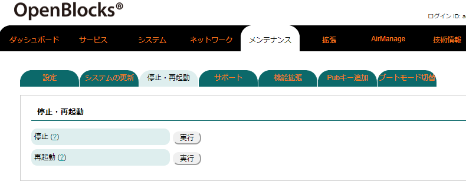 |
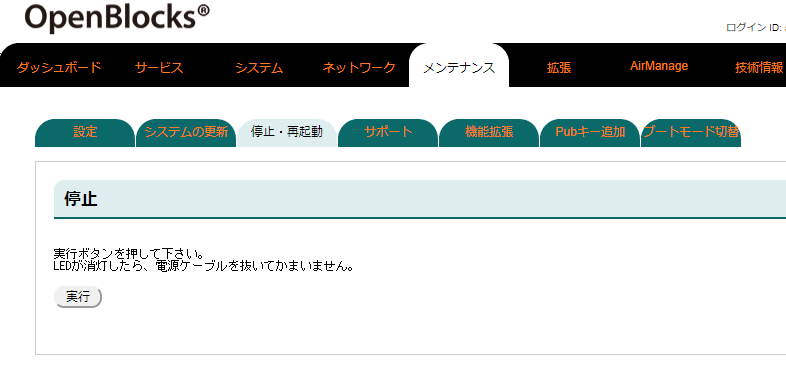 |
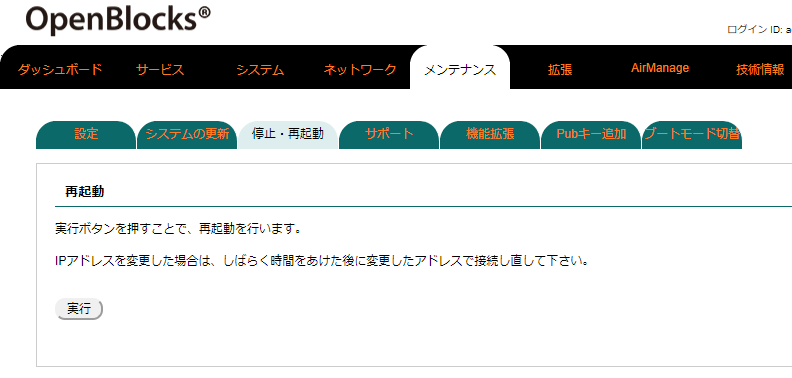 |
停止・再起動 |
|
|---|---|
項目 |
備考 |
停止 |
本装置を停止することができます。停止の実行ボタンを押すことにより、停止画面に遷移します。 停止画面の実行ボタンを押すことにより、本装置の停止処理が行われます。 また、停止処理を実行した場合、自動では復旧いたしません。そのため、実運用時は行わないでく ださい。 |
再起動 |
本装置を再起動することができます。再起動の実行ボタンを押すことにより、再起動画面に遷移し ます。再起動画面の実行ボタンを押すことにより、本装置の再起動処理が行われます。 |
フォーマット機能¶
OpenBlocks IX9のSSD未搭載モデルにて、追加でSSDを搭載した場合にフォーマット機能が使用可能となります。実行箇所はシステム⇒フォーマットタブとなります。
本機能は追加のSSDのパーティションに対してフォーマット処理が行えます。本機能を使用する前にパーティションの作成を推奨いたします。
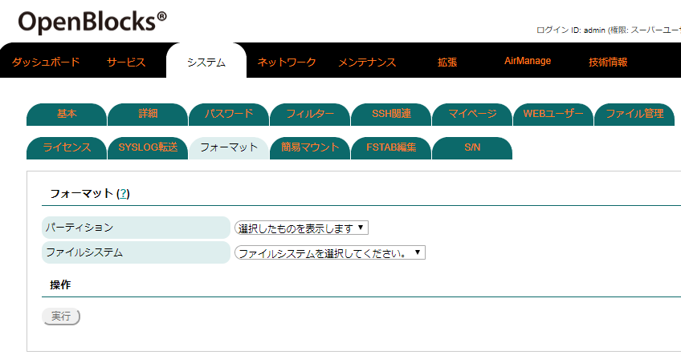
フォーマット |
|
|---|---|
項目 |
備考 |
パーティション |
追加搭載したSSDのパーティションを選択します。 ※パーティションが存在しない場合、ブロックデバイスが選択できます。 |
ファイルシステム |
ext4/ext3/ext2/ntfs/vfatから選択してください。 |
パーティション及びファイルシステム選択後、実行ボタンを押すことによりフォーマット処理が行われます。
簡易マウント機能¶
OpenBlocks IX9のSSD未搭載モデルにて、追加でSSDを搭載した場合に簡易マウント機能が使用可能となります。実行箇所はシステム⇒簡易マウントタブとなります。
本機能は追加のSSDのパーティションのマウント設定を簡易的に行えます。
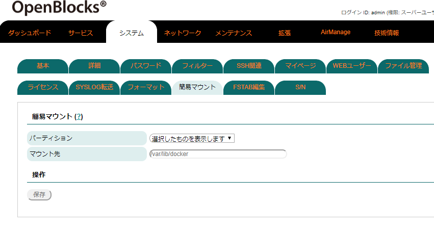
簡易マウント |
|
|---|---|
項目 |
備考 |
パーティション |
マウント対象のパーティションを選択します。 マウント可能なファイルシステムはext4/ext3/ext2となりますので、フォーマット機能にて対象の ファイルシステムへとフォーマットしてください。 |
マウント先 |
対象パーティションのマウントポイントを指定します。 |
実行ボタンを押すことにより設定が保存されます。次回起動時に反映されます。
FSTAB編集機能¶
OSが参照するファイルシステムの情報設定を編集することができます。本機能により追加ストレージのファイルシステム参照を変更することが行えますが、設定が間違っている場合正常に起動できない場合が発生します。そのため、本機能を用いて変更を行う場合にはご注意ください。
実行箇所はシステム⇒FSTAB編集タブとなります。
編集確認前 |
編集確認後 |
|---|---|
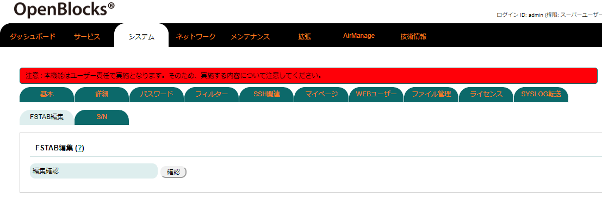 |
FSTAB編集 |
|
|---|---|
項目 |
備考 |
パーティション |
「確認」ボタンを押すことにより、本機能を用いるかの確認メッセージのポップアップが表示され ます。 ポップアップにて”OK”を選択した場合、fstabファイル内容がテキストエリアに表示されます。 このテキストエリアを編集し、保存することで編集が完了します。 尚、設定したfstabファイル内容については次回起動時から反映されますので、設定変更後は再起動 を行ってください。 |
ホスト追加機能¶
ローカルネットとワーク等のDNSを用いずホスト名とIPアドレスの解決を行うhostsファイル内容について追記が行えます。
実行箇所はネットワーク⇒ホスト追加タブとなります。
ホスト追加 |
|
|---|---|
項目 |
備考 |
ホスト追加 |
IPアドレスとホスト名を1行ずつ記載します。IPアドレスとホスト名の区切りはスペースにてを用 いてください。 尚、ホスト名は複数記載することが可能です。 【書式】 <IPアドレス> <ホスト名> Ex.) 172.16.7.1 gateway |
稼働情報機能¶
OpenBlocks本体の稼働情報を定期的に取得し保存することができます。
実行箇所は拡張⇒稼働情報タブとなります。
稼働情報ファイルが取得できている場合 |
|
|---|---|
※表示内容は稼働情報ファイル内の本体に依存する情報の のみとなります。 |
稼働情報 |
|
|---|---|
項目 |
備考 |
使用設定 |
OpenBlocks本体の稼働情報を取得する場合、「使用する」を選択し保存してください。 |
情報取得間隔 |
稼働情報の取得間隔を選択します。1分毎/5分毎/10分毎/30分毎/1時間毎/2時間毎/3時間毎/4時間 毎/6時間毎/12時間毎から選択可能です。 |
一括操作 |
各取得項目について”一括有効”または” 一括無効”ボタンを押すことによって、対象の操作が行え ます。 |
取得項目[シリアルNo.] |
稼働情報に本体のシリアルNo.を含めるかを"無効"、"有効"から選択します。 |
取得項目[HWモデル] |
稼働情報に本体のモデル情報を含めるかを"無効"、"有効"から選択します。 |
取得項目[稼働時間] |
稼働情報に本体の稼働時間情報を含めるかを"無効"、"有効"から選択します。 |
取得項目[平均負荷] |
稼働情報に本体の平均負荷情報を含めるかを"無効"、"有効"から選択します。 |
取得項目[メモリ情報] |
稼働情報に本体のメモリ情報を含めるかを"無効"、"有効"から選択します。 |
取得項目[ストレージ情報] |
稼働情報に本体の情報を含めるかを"無効"、"有効"から選択します。 |
取得項目[NIC] |
稼働情報に本体のNIC情報を含めるかを"無効"、"有効"から選択します。 |
取得項目[IPv4ルーティング] |
稼働情報に本体のIPv4ルーティング情報を含めるかを"無効"、"有効"から選択します。 |
取得項目[IPv6ルーティング情報] |
稼働情報に本体のIPv6ルーティング情報を含めるかを"無効"、"有効"から選択します。 |
取得項目[シリアルNo.] |
稼働情報に本体のシリアルNo.を含めるかを"無効"、"有効"から選択します。 |
(取得項目[WLAN情報]) |
稼働情報に本体のWLAN情報を含めるかを"無効"、"有効"から選択します。 尚、本項目は本体にWLAN I/F搭載モデルにのみ表示されます。 |
(取得項目[BT情報]) |
稼働情報に本体のBT情報を含めるかを"無効"、"有効"から選択します。 尚、本項目は本体にBT I/F搭載モデルにのみ表示されます。 |
(取得項目[モバイル情報]) |
稼働情報に本体のモバイル情報を含めるかを"無効"、"有効"から選択します。 尚、本項目は本体にモデム搭載モデルにのみ表示されます。 |
固定情報付与 |
稼働情報に固定で付与したい情報をJSONで記載します。 Ex.) { "debug" : "test" } |
稼働情報は以下にJSONファイルとして保存しています。 ファイル : /tmp/device_status.json